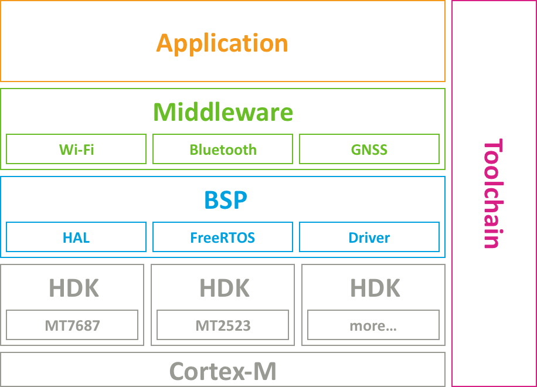
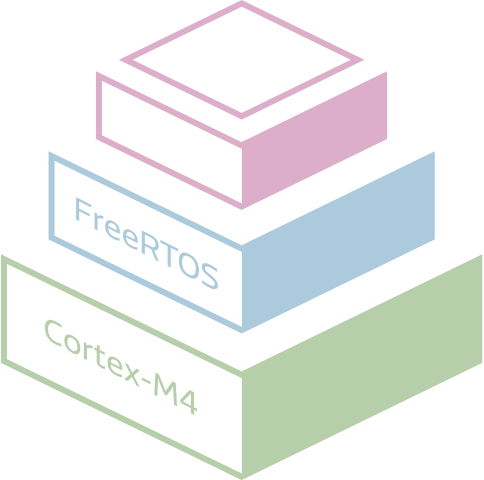

LinkIt™ 开发平台 for RTOS
概述

联发科技 LinkIt™ 开发平台 for RTOS 是一个具备丰富功能的物联网与穿戴式开发平台。该平台支持一系列联发科技芯片，包含用于物联网设备的MT7687F, MT7697 and MT7697D，以及用于穿戴式设备的MT2523D 和 MT2523G。本开发平台基于受欢迎的FreeRTOS操作系统，透过提供统一的程序接口与开发工具，您将能在多样的系统单芯片上开发广泛的消费性或商务物联网设备。
连网系统单芯片
一系列多样化的系统单芯片（SoC），集成了无线通信功能与单片机，具有优秀功耗性能表现。
- Wi-Fi 无线网络 (MT7687 family)
- Wi-Fi 无线网络与Bluetooth LE低功耗蓝牙 (MT7697 family)
- 卫星定位与双模式蓝牙 Bluetooth EDR/LE(MT2523 family)

广受欢迎的软硬件架构
基于流行的ARM Cortex-M4硬件架构以及FreeRTOS操作系统，您可集成并利用各种多样化的第三方工具，在LinkIt™ 开发平台 for RTOS上面进行开发。
丰富的软件功能
本平台提供LinkIt SDK v4，集成了多种中间件，可用于快速开发广泛类型的应用。软件开发套件提供的功能有：TCP/IP，SSL/TLS，MQTT，Bluetooth EDR/LE profiles，传感器子系统，电池管理，以及远程无线固件更新。